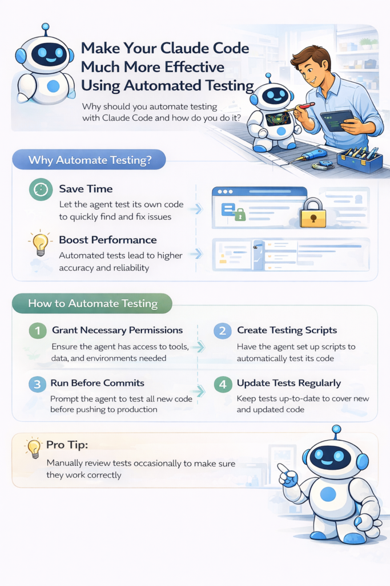

Insight Media Group: Masa Depan Publikasi Digital

Insight Media Group: Masa Depan Publikasi Digital 🚀
📅 25 April 2026

Dunia publikasi digital terus bertransformasi seiring dengan integrasi teknologi yang semakin mendalam. Insight Media Group muncul sebagai salah satu pionir yang memahami bagaimana konten berkualitas harus didistribusikan secara efisien di era informasi yang sangat padat ini.
🇮🇩 Relevansi untuk Ekosistem Media Indonesia
Di Indonesia, tantangan media digital bukan hanya tentang kecepatan, tetapi juga tentang kedalaman analisis dan kredibilitas.
- Inovasi Konten: Menggabungkan jurnalisme tradisional dengan alat bantu AI otonom untuk riset data yang lebih cepat.
- Distribusi Pintar: Memastikan artikel sampai ke pembaca yang tepat melalui algoritma yang lebih humanis.
- Pemberdayaan Penulis: Memberikan ruang bagi para kontributor untuk berkembang dengan standar publikasi premium.
💡 Visi Menuju Masa Depan
Publikasi bukan lagi sekadar teks di layar, melainkan sebuah pengalaman interaktif. Dengan dukungan platform seperti yang dikembangkan oleh Insight Media Group, penulis dapat lebih fokus pada substansi sementara teknologi menangani optimasi distribusi.
Sumber: Insight Media Group | Penulis: Muhdan Fyan Syah Sofian Ditulis menggunakan Gemini CLI